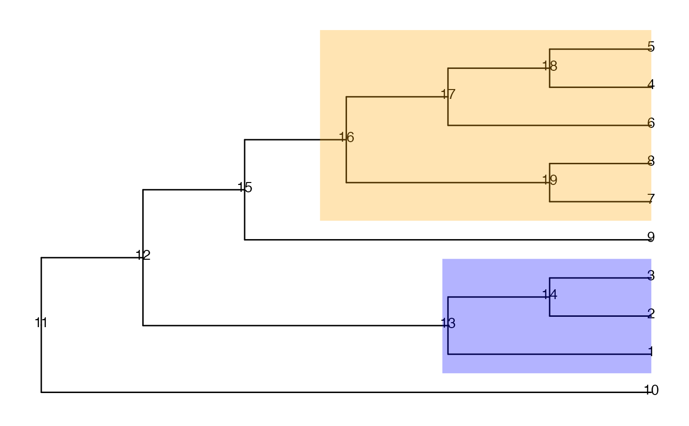

Calculate the false discovery rate on a tree structure, at either leaf or node level.
fdr(tree, truth, found, only.leaf = TRUE)A phylo object.
True signal nodes (e.g., nodes that are truly differentially
abundant between experimental conditions). Note: when the
FDR is requested at the leaf level (only.leaf = TRUE), the
descendant leaves of the given nodes will be found and the FDR will be
estimated on the leaf level.
Detected signal nodes (e.g., nodes that have been found to be
differentially abundant via a statistical testing procedure).
Note: when the FDR is requested at the leaf level
(only.leaf = TRUE), the descendant leaves of the given nodes will
be found out and the FDR will be estimated on the leaf level.
A logical scalar. If TRUE, the false discovery rate
is calculated at the leaf (tip) level; otherwise it is calculated at
the node level.
The estimated false discovery rate.
suppressPackageStartupMessages({
library(ggtree)
library(TreeSummarizedExperiment)
})
data(tinyTree)
## Two branches are truly differential
ggtree(tinyTree, branch.length = "none") +
geom_text2(aes(label = node)) +
geom_hilight(node = 16, fill = "orange", alpha = 0.3) +
geom_hilight(node = 13, fill = "blue", alpha = 0.3)

## FDR at the leaf level if nodes 14 and 15 are called differential (1/8)
fdr(tree = tinyTree, truth = c(16, 13),
found = c(15, 14), only.leaf = TRUE)
#> fdr
#> 0.125
## FDR at the node level if nodes 14 and 15 are called differential (2/14)
fdr(tree = tinyTree, truth = c(16, 13),
found = c(15, 14), only.leaf = FALSE)
#> fdr
#> 0.1428571